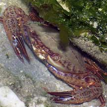
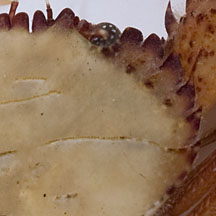
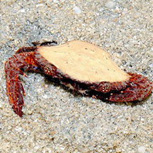

|
|
| crabs text index | photo index |
| Phylum Arthropoda > Subphylum Crustacea > Class Malacostraca > Order Decapoda > Brachyurans > Family Portunidae |
| Ridged
swimming crab Charybdis natator* Family Portunidae updated Feb 2020 Where seen? This swimming crab is not often encountered, under stones on sandy shores. Features: Body width 5-7cm, to 17cm. Body somewhat fan-shaped with 6 spines on the sides. The eyes not very far apart. Between the eyes there are 8 small rounded lobes. Last pair of legs are paddle-shaped and rotate like boat propellers, so the crab swims well in all directions. It is a fully marine crab and cannot live long out of water. Body usually plain beige, covered with fine hairs which traps sediments. Legs and pincers reddish brown with dark coloured bumps, black tipped with blue spots at the base of the 'fingers' of the claw. |
|
 Changi, Apr 05 |
 Sisters Island, Jan 12 |
 6 spines on the body side. |
*Species are difficult to positively identify without close examination.
On this website, they are grouped by external features for convenience of display.
| Ridged swimming crabs on Singapore shores |
On wildsingapore
flickr
|
| Other sightings on Singapore shores |
 Tanah Merah, Mar 13 |
Links
|